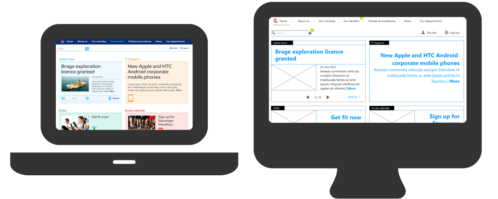

{{> header}}

<div class="article-wrapper">

    <h5 class="case">Case</h5>

    <h1>Faroe Petroleum</h1>

    <h2>Groundbreaking responsive solution based on facetted navigation on SharePoint 2013</h2>

    <div class="article-image">
        <div class="article-image-element">
            
              <div class="article-image-overlay">
                <!--  <h2><span class="highlight">Wireframes for the new TV platform</span></h2>-->
              </div>
        </div>
    </div>


    <div class="article-text">

        <p>The mandate of the project was to build a web publishing framework based on SharePoint 2013.
          The most important feature was a geological database with interactive maps over the North Atlantic continental shelf.
          The intranet framework was created first to establish a responsive web publishing foundation.


        </br></br>The  innovative responsive solution was based on SharePoint 2013 and the new FAST-based SP search engine. My role included
        information architecture, interaction design, responsive wireframe prototyping and concept development.

      </p>

    </div>

</div>


{{> footer}}
